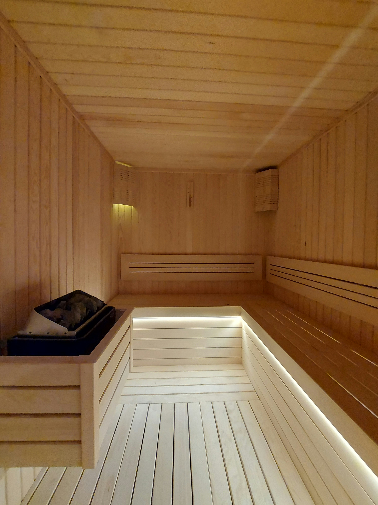
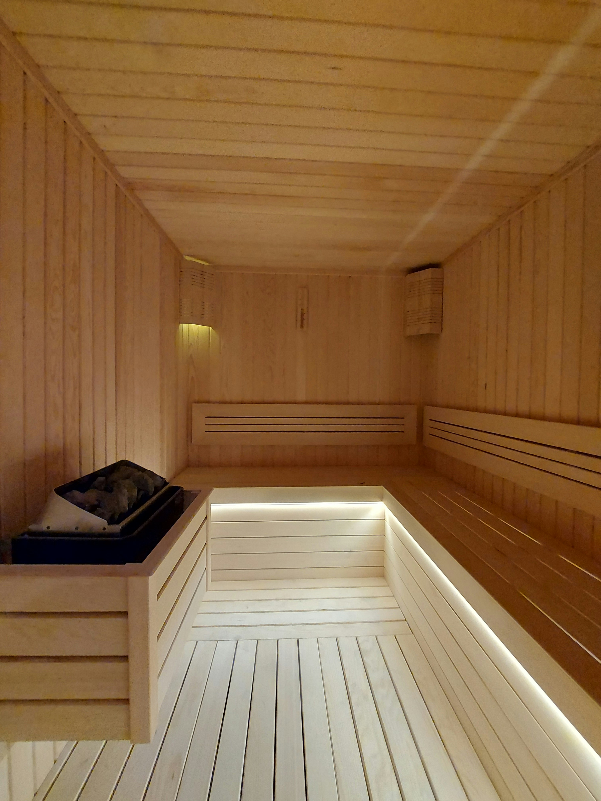
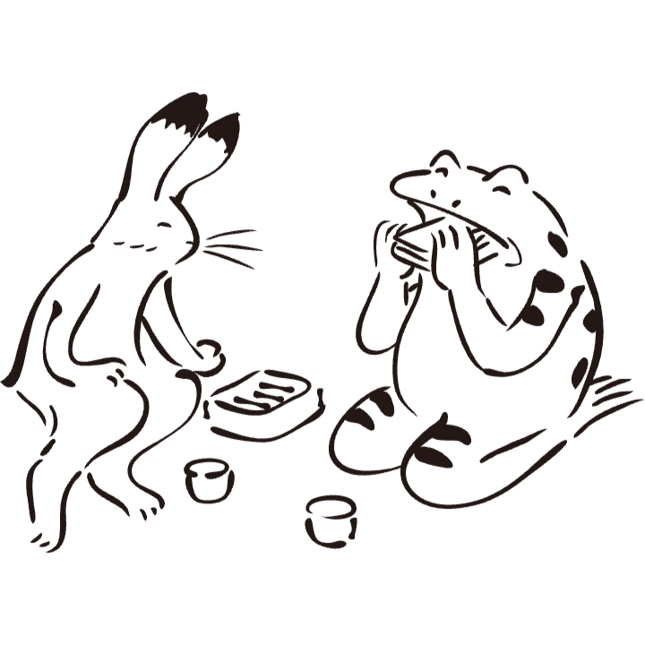

兎の湯
【うさぎの湯】について
うさぎの湯のこだわり
・「美肌の湯」：地下水を使用したやわらかいお湯
・薪で沸かした昔ながらの熱湯（焼く44℃の高温風呂あり）
・関西では珍しい「本格ロウリュサウナ」完備
・湯上がりスペースで地元の牛乳やアイスが楽しめる
・レトロなタイル絵とモダンな内装の融合
お風呂

・主浴槽（43℃）：地下水を薪で沸かした、やわらかいお湯
・高温風呂（45℃）：熱めのお湯が好きな人向けの浴槽
・露天風呂（40℃）：炭酸泉を使用した、ゆったり浸かれるお風呂
・電気風呂：肩こり・腰痛に効く低周波治療風呂
・ジェットバス：強力な水流で血行促進
・薬湯（週替わり）：週ごとに変わる季節の薬湯
ロウリュサウナ
 


・ロウリュサウナ（90℃）：毎時00分にスタッフによるロウリュサービス
・水風呂（16℃）：地下水かけ流しのキンキンに冷えた水風呂

湯上がりスペース


・瓶牛乳（コーヒー牛乳・フルーツ牛乳あり）
・アイスキャンディー（地元老舗メーカーのアイス）
・おつまみ、軽食（おにぎり・ゆで卵・缶ビールなど）